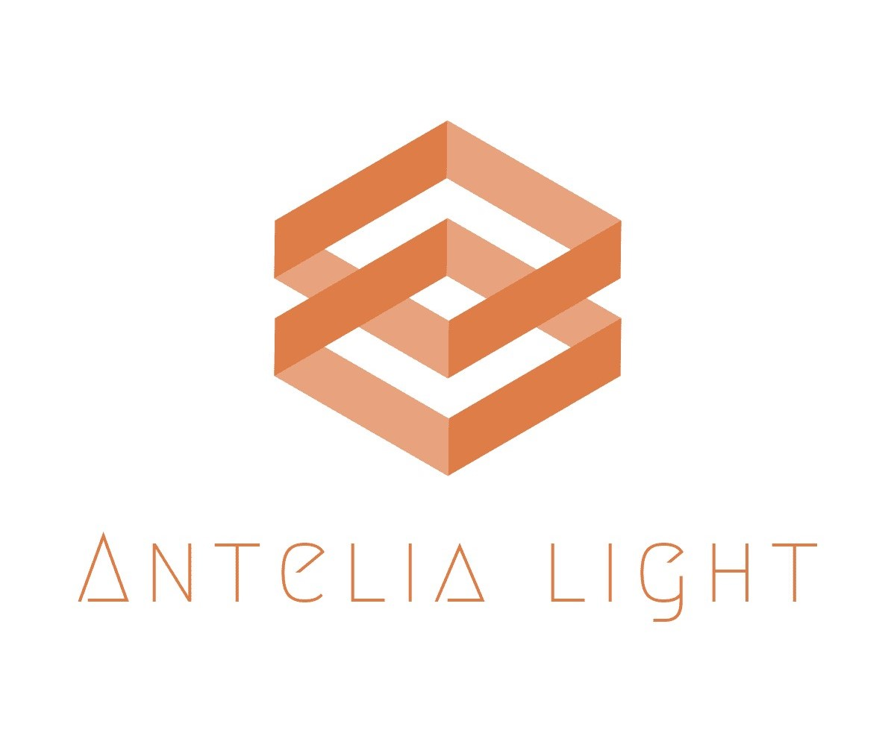

Antelia Light
5 de diciembre 2020 / Naomi Guerrero Arias / Antelia Light
Antelia Light
Somos una empresa que se encarga de desarrollar y vender productos para el cuidado diario de las personas, creada por dos jóvenes emprendedores que buscan mejorar su entorno y la vida de los demás.
Somos Jaseft Lugo y Naomi Guerrero, dos compañeros de secundaria entusiastas que descubrieron que tenían el interés común de desarrollar productos naturales para el cuidado personal.
Reseña historica
Como co-creadores, un día nos vimos obligados a formar parte de un proyecto de emprendimiento, en el cual era necesario desarrollar una empresa con los principios en los cuales creemos. Por lo que nos pareció una excelente oportunidad, explorar el mundo del cuidado facial, ya que ambos tenemos una piel hermosa, creímos ideal compartir nuestros secretos de belleza. Así que elegimos nuestros ingredientes preferidos para crear nuestros productos en nuestra propia casa.
Misión, visión y valores
Misión
Llevar a nuestros clientes productos de alta calidad con los mejores ingredientes del país para que luzcan relucientes, mientras proponemos soluciones más sostenibles para el medio ambiente.
Visión
Convertirnos en una marca que cuente con la confianza nacional, siendo la número 1 en productos de belleza naturales del país.
Valores
- Responsabilidad ambiental
- Honestidad
- Confianza
- Compromiso
Filosofía
“Ser saludable no es un producto, es un estilo de vida”
Esto quiere decir que no solo vendemos productos, sino que también incentivamos un estilo de vida más saludable y sostenible. Desde las decisiones industriales que tomamos, hasta los ingredientes que utilizamos.
Encargados
Jaseft Yoshiro Lugo Ferradas
Naomi Guerrero Arias
Jabones artesanales
6 de diciembre 2020 / Jaseft Yoshiro Lugo Ferradas / Antelia Light

¿Qué es un jabón artesanal?
Es aquel que en su técnica de fabricación se utilizan ingredientes naturales de origen vegetal y que por lo tanto son más beneficiosos y menos agresivos con la piel.
Para que un jabón sea realmente considerado artesanal, debe de elaborarse a mano desde el primer hasta el último paso; el proceso se hace en frío consiguiendo manualmente la saponificación* a base de aceites, dando como resultado un jabón humectante con glicerina y las propiedades específicas según el tipo de aceite o ingrediente natural que se haya utilizado en su elaboración.
¿Cuáles son los beneficios?
Sabemos que existen diferentes tipos de pieles: las grasosas, secas, mixtas, con acné, pieles delicadas, sensibles etc. Los jabones artesanales al ser elaborados a mano pueden combinar diferentes tipos de aceites, flores, hierbas,que se mezclan entre sí, confiriendo virtudes cosméticas especiales creando jabones “personalizados”, ayudando a mantener la piel en óptimas condiciones.
Otra de las ventajas de los jabones naturales es que no contaminan ya que no contienen derivados del petróleo. Así mismo, limpian en profundidad sin resecar la piel, ayudan a mantener los aceites naturales, son antioxidantes, hidratantes, y aportan elasticidad y suavidad a la piel.
En cambio en el método de elaboración de los jabones comerciales se lleva a cabo a temperaturas de alrededor de 170°C para lograr apartar la glicerina. La mayoría de los fabricantes que eliminan la glicerina en el proceso de saponificación.
La glicerina es el ingrediente más provechoso que puede tener un jabón, ya que contribuye a mantener la piel humectada y es muy útil para tratar algunas enfermedades cutáneas como el eczema. En algunas ocasiones se trata de restituir parte de esa glicerina en los jabones industriales y en otras es substituida por agentes químicos, que pueden ser causantes de irritaciones o alergias en la piel.
Por otra parte los jabones comerciales, puede ser que sean más baratos, pero se elaboran con productos que son altamente contaminantes y nocivos para el medio ambiente y la salud de nuestra piel, y por sus ingredientes sintéticos, resecan la piel, la irritan, y en algunas ocasiones pueden fomentar enfermedades cutáneas.
Como exponemos aquí, los beneficios de los jabones artesanales son muchos más que aquellos hechos de forma industrial. Aunque pueda parecer algo irrelevante, cuidar nuestra piel en cada momento es lo que hará la diferencia y nos ayudará a tenerla radiante, sana y sobretodo hermosa.
Ingredientes para jabón:
- 2 pastillas de jabón de glicerina (250 g).
- 1 taza de gel aloe vera (200 g).
- 4 cucharadas de miel (60 g).
- 5 cucharadas de aceite de jojoba(100 ml).
- 5 gotas de aceite de árbol de té.
- 2 cucharadas de pétalos de flores
- Molde de silicona
Proceso de hacer el jabón:
En primer lugar, consigue un recipiente resistente al calor del microondas. Luego, introduce las pastillas de jabón de glicerina y ponlas a derretir. Aunque es mejor si tienes glicerina líquida.
Posteriormente, cuando el jabón esté derretido, agrega las cucharadas de miel, las gotas de aceite de árbol de té y la pulpa de aloe vera.
Aparte, calienta el aceite de jojoba UN POQUITO hasta que esté tibio. Evita que se recaliente porque puede perder sus propiedades.
Habiendo hecho esto último, agrega el aceite de jojoba y las flores, mezcla bien con lo que encuentres (yo probablemente voy a usar un tenedor, se recomienda una espátula de madera, pero no voy a dañar nada de mi casa así que tenedor viejo). Al final, debes obtener una mezcla brillante, con aroma agradable.
Vierte el contenido en el molde que tengas (puede ser de plástico, solo un molde).
Para terminar, mete el jabón en el refrigerador durante un día, hasta que se solidifique bien. Si lo hiciste sobre un molde grande, corta varias pastillas para facilitar su uso.
Ingredientes de Antelia Light
7 de diciembre 2020 / Jaseft Yoshiro Lugo Ferradas / Antelia Light
Todos nuestros ingredientes son 100% vegetales y obtenidos de distribuidores dominicanos, entre estos tenemos los mejores aceites, el mejor tipo de glicerina y productos 100% naturales. Todos productos leíbles y no llenos de conservantes artificiales.

Aceite de jojoba. Este es el aceite más parecido al que produce nuestra piel naturalmente, por lo cual, puede ayudar con todos tipos de piel, desde seca hasta grasosa.
Aceite de árbol de té. Este es uno de los más potentes antisépticos naturales, y mientras que debe ser usado diluido, combate la gran mayoría de los problemas en nuestra piel como lo es el acné.
Aceite de oliva. Es un excelente humectante natural para pieles sensibles, además de que contiene las propiedades rejuvenecedoras que todos aman.
Glicerina vegetal. Alternativa más saludable a otros químicos que pueden ser dañinos según la cantidad utilizada.
Miel orgánica. Producto antibacteriano que equilibra la producción de grasa y aclara el tono de la piel. También limpia profundamente, es exfoliante, calmante, antiinflamatoria y combate el acné.
Aloe vera. La cual es antiinflamatoria y antialérgica, por lo cual es un perfecto ingrediente para productos que van a nuestro rostro.